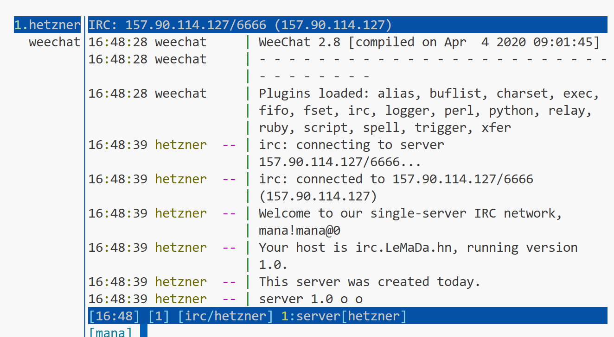

42_IRC: Modern C++ IRC Chat Server 🚀
📝 Project Overview
42_IRC is a student-built, modern C++ implementation of a classic IRC (Internet Relay Chat) server. It brings the legacy IRC protocol — one of the oldest and most robust chat standards — into a clean, maintainable, and extensible codebase. The project demonstrates network programming, protocol parsing, and multi-client management using C++17, with a focus on clarity and educational value.
IRC is a text-based chat protocol dating back to 1988, still used for group and private messaging. It is:
- Open and well-documented
- Line-based: Each command/message is a line ending with
\r\n - Stateless: Clients can connect, join channels, and chat without persistent accounts
- Extensible: Supports custom commands and server features
✨ Project Specialties
- C++17, modular design
- Custom event-driven server core (no external IRCd)
- Handles multiple clients and channels
- Implements core IRC commands (NICK, USER, JOIN, PART, PRIVMSG, etc.)
- Password-protected server (see below)
- Verbose debug output for learning and troubleshooting
⚡ Setup & Installation
1. Clone the Repository
git clone https://github.com/spezialcoder/42_irc.git
cd 42_irc2. Build the Server
Requires: g++, make
make3. Run the Server
./ircserv- Default port: 6666 (see
main.cppto change) - Default server password: abc (see
main.cpp) - Default server name: irc.LeMaDa.hn (see
main.cpp) - Leave terminal open while running the server
- Use Ctrl+C to stop the server gracefully
- Port: Edit
constexpr int PORT = 6666;inmain.cpp - Password: Edit
constexpr auto SERVER_PASSWORD = "abc";inmain.cpp - Server name: Edit
constexpr auto SERVER_NAME = ...inmain.cpp
🖥️ Server Output
The server prints status and debug info to the console:
[MPlexServer][timestamp]— Core server events[CONNECT]/[DISCONNECT]— Client connections[MSG]— Parsed IRC commands and arguments[LOGIN]— Registration and login status[SERVER] Alive - Uptime: ...— Heartbeat
💬 Connecting with WeeChat
- Install WeeChat
sudo apt install weechat # or use your OS package manager - Start WeeChat
weechat - Add the IRC server
In WeeChat, type:
/server add 42irc 157.90.114.127/6666 -password=abc /connect 42irc - upon successful connection: 
- Join a channel
With
/join #channelyou can join existing channels or create new ones if that name doesn't already exist.

🧪 Testing & Capabilities
- Multiple clients: Connect from several terminals or machines
- Channel management:
/join #channel,/part #channel - Private messaging:
/msg nick message - Server password: Try connecting with/without the correct password
- Custom server name/port: Change in
main.cppand rebuild - Observe debug output: Watch how the server parses and responds to commands
🚀 Ideas for Further Exploration
- Implement more IRC commands (MODE, TOPIC, KICK, etc.)
- Add logging to file
- Add SSL/TLS support
- Build a web-based IRC client
- Experiment with bots or automation
👩💻 About
This project was created as a student exercise in network programming and protocol design. It is intended for learning, experimentation, and as a foundation for more advanced chat systems.
Daniel Spring, Lewin Sorg, Matthias Naumann
Happy chatting! 🎉